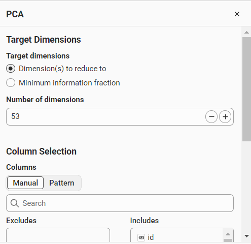
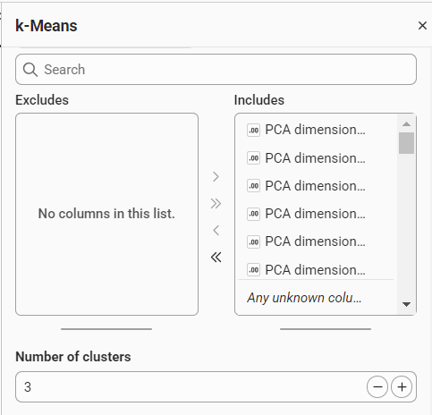
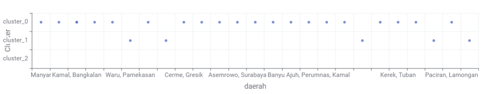

K-Means Clustering#
1. Pendahuluan#
Setelah data polutan di Kecamatan Bandung dibersihkan dan fitur-fitur time series berhasil diekstraksi, tahap berikutnya adalah melakukan pengelompokan pola data menggunakan algoritma K-Means Clustering. Tujuan dari tahap ini adalah mengelompokkan periode waktu berdasarkan karakteristik konsentrasi polutan sehingga pola yang serupa dapat dikenali secara bersama-sama.
Pada studi kasus ini, data yang diproses mencakup tiga variabel utama, yaitu:
CO
SO₂
NO₂
Dengan pendekatan clustering, kita dapat melihat apakah ada kelompok hari yang memiliki kondisi udara relatif serupa, misalnya periode dengan kadar polutan tinggi, sedang, atau rendah.
2. Flow Workbench Clustering#
Di tahap ini, workflow pengelompokan dilakukan dengan pendekatan visual menggunakan aplikasi KNIME. Diagram berikut menggambarkan alur utama proses clustering dari data mentah hingga visualisasi hasil:
MySQL Connector
|
v
DB Table Selector --> DB Reader --> Table View --> PCA --> K-Means --> Scatter Plot
\______________________________/
(input data)
Secara umum, alur kerja tersebut terdiri dari:
MySQL Connector untuk mengambil data dari sumber.
DB Table Selector dan DB Reader untuk membaca tabel data.
Table View untuk melihat struktur data dan memastikan variabel sudah masuk dengan benar.
PCA untuk mereduksi dimensi fitur agar hasil clustering lebih stabil.
K-Means untuk membagi data ke dalam beberapa klaster.
Scatter Plot untuk memvisualisasikan hasil pengelompokan secara dua dimensi.
3. Data Input dan Persiapan#
Data yang digunakan adalah hasil preprocessing dan ekstraksi fitur dari deret waktu polutan di Kecamatan Bandung. Pada tahap ini, data tidak langsung digunakan untuk clustering tanpa persiapan. Ada beberapa langkah yang perlu dilakukan, di antaranya:
memastikan tidak ada nilai missing setelah preprocessing,
memastikan format tanggal dan variabel sudah konsisten,
memilih fitur yang relevan untuk clustering,
memeriksa distribusi data untuk menghindari dominasi variabel tertentu.
Karena dataset memiliki banyak fitur, pembobotan antar variabel bisa sangat berpengaruh pada hasil clustering. Oleh karena itu, sering digunakan PCA (Principal Component Analysis) untuk mereduksi dimensi dan menjaga struktur data tetap eksploratif namun lebih ringkas.
4. Principal Component Analysis (PCA)#
Pada tahap ini, data yang telah diekstraksi fitur diproses dengan metode PCA untuk mereduksi dimensi dari struktur data yang awalnya lebih kompleks menjadi representasi yang lebih sederhana. Dalam eksperimen yang digunakan pada studi ini, data awal memiliki 68 fitur, kemudian dilakukan pemilihan terhadap 15 fitur utama yang dianggap paling representatif. Setelah proses tersebut, data yang dipertahankan menjadi 53 fitur yang masih tersisa untuk analisis lanjutan. Tujuan utamanya adalah mempertahankan informasi utama sekaligus mengurangi redundansi antar variabel agar proses clustering menjadi lebih stabil dan lebih mudah diinterpretasikan.
Manfaat PCA dalam pipeline ini adalah:
mempermudah visualisasi data,
mengurangi redundansi antar fitur,
meningkatkan kestabilan proses clustering,
membantu melihat pola kelompok yang lebih jelas.
Setelah proses seleksi dan reduksi dari 68 fitur menjadi 53 fitur yang terpilih, data siap diproses lebih lanjut menggunakan algoritma K-Means dengan jumlah klaster yang ditentukan secara eksplisit.
Visualisasi PCA#
Proses reduksi dimensi ini divisualisasikan pada gambar berikut, di mana 68 fitur awal direduksi 15 fitur sehingga menghasilkan 53 fitur yang masih terjaga representasinya dalam analisis clustering.

5. Algoritma K-Means#
Setelah data diproses melalui PCA dengan basis seleksi 15 fitur utama dari total 68 fitur, maka data yang dipertahankan menjadi 53 fitur. Tahap berikutnya adalah pengelompokan dengan algoritma K-Means. Pada eksperimen ini, jumlah klaster yang digunakan adalah 3 cluster. Pemilihan 3 cluster didasari pada kebutuhan untuk membagi pola data menjadi tiga kelompok utama yang representatif terhadap karakteristik kualitas udara di wilayah Kecamatan Bandung.
K-Means merupakan algoritma clustering berbasis centroid, yaitu membagi data menjadi beberapa kelompok berdasarkan kedekatan dengan pusat klaster. Prosesnya berlangsung iteratif:
Menentukan jumlah klaster awal.
Mengambil centroid awal secara acak atau berbasis sebaran data.
Menghitung jarak tiap data ke tiap centroid.
Mengelompokkan data ke centroid terdekat.
Mengupdate centroid baru berdasarkan rata-rata data di setiap klaster.
Mengulangi sampai centroid stabil atau iterasi berhenti.
Secara matematis, K-Means meminimalkan fungsi objektif berikut:
di mana:
\(K\) = jumlah klaster,
\(C_k\) = klaster ke-k,
\(x_i\) = data ke-i,
\(\mu_k\) = centroid klaster ke-k.
6. Eksperimen Clustering#
Pada tahap eksperimen, beberapa skenario clustering dapat dibandingkan, terutama:
clustering pada data fitur asli,
clustering pada data hasil reduksi PCA,
variasi jumlah klaster yang dievaluasi.
Tujuannya adalah menemukan konfigurasi yang paling representatif dalam membedakan pola kualitas udara di wilayah Kecamatan Bandung. Dalam konteks ini, klaster yang terbentuk merepresentasikan periode-periode dengan kemiripan karakteristik polutan.
6.1 Variabel yang Digunakan#
Fitur yang digunakan umumnya berasal dari hasil preprocessing dan ekstraksi fitur time series, seperti:
rata-rata konsentrasi,
variasi antar waktu,
skewness,
kurtosis,
nilai amplitudo dan perubahan temporal,
karakteristik spektral dari seri data.
6.2 Output Visual#
Pada tahap ini, hasil clustering ditampilkan berdasarkan konfigurasi yang benar-benar digunakan dalam eksperimen, yaitu:
PCA: target dimensi diatur pada 53 fitur,
K-Means: jumlah klaster yang digunakan adalah 3 cluster.

Gambar di atas menunjukkan konfigurasi utama proses clustering, di mana fitur diproses terlebih dahulu melalui PCA lalu dilanjutkan ke langkah K-Means. Dengan demikian, visualisasi tersebut bukan sekadar pembanding, melainkan bentuk implementasi final yang sesuai dengan rancangan analisis pada penelitian ini.

Visualisasi ini memberi gambaran bahwa data dengan karakteristik serupa akan cenderung bergerombol dalam ruang fitur yang sama, sementara data dengan pola berbeda akan terpisah ke wilayah lain. Pada kondisi ini, tiga klaster yang terbentuk merepresentasikan tingkat kemiripan pola kualitas udara di Kecamatan Bandung berdasarkan data yang telah diproses dan dikelompokkan sesuai konfigurasi di atas.
7. Interpretasi Hasil Clustering#
Hasil clustering dapat diinterpretasikan sebagai pola temporal kualitas udara di Kecamatan Bandung yang terbagi ke dalam beberapa kelompok. Misalnya:
Klaster 1: periode dengan konsentrasi polutan cenderung lebih rendah.
Klaster 2: periode dengan konsentrasi moderat dan fluktuatif.
Klaster 3: periode dengan konsentrasi tinggi dan berpotensi memengaruhi kesehatan masyarakat.
Dengan demikian, clustering bukan hanya sekadar mengelompokkan data, tetapi juga membantu mengidentifikasi periode kritis dan pola yang berulang dalam kualitas udara.
8. Kesimpulan#
Tahap K-Means Clustering menjadi bagian penting dalam analisis data polutan karena memungkinkan kita mengelompokkan hari-hari berdasarkan karakteristik kualitas udara secara otomatis. Kombinasi antara PCA dan K-Means memberikan pendekatan yang lebih efektif dalam memahami pola data yang kompleks.
Pada wilayah Kecamatan Bandung, hasil clustering diharapkan dapat membantu pemangku kepentingan melihat kondisi emisi udara secara lebih terstruktur, sehingga dapat dijadikan dasar pertimbangan dalam pengambilan keputusan lingkungan.